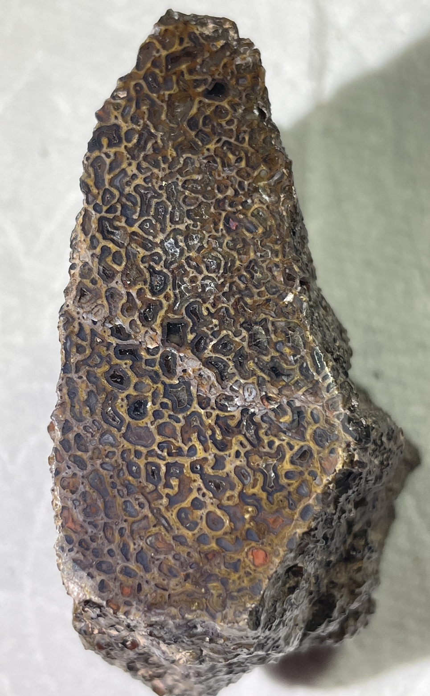
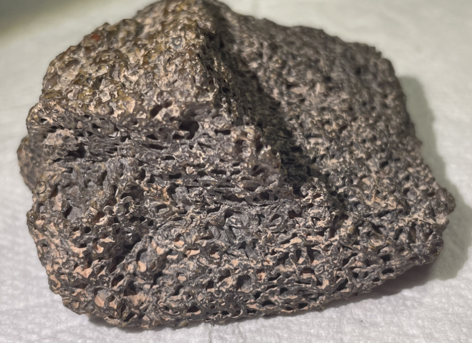
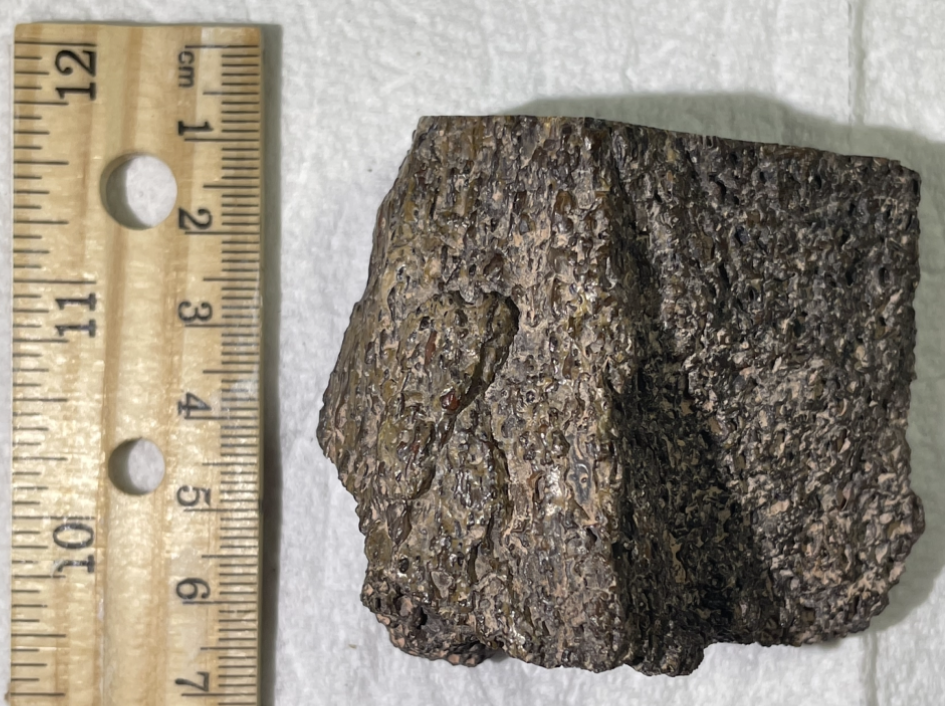

Dinosaur
Indet. Sauropod
Jurassic
Morrison Formation
Utah, USA
Size: about 6 cm x 6 cm
ID: S5-Din-Jur-Mor-Ind
PRICE: $20
This is a chunk of agatized dinosaur gembone, polished on one side to show lovely colorful cell structure. Likely from a sauropod dinosaur.
Gembone is one of the few gemstones created from organic matter, alongside the likes of pearl and ammolite.
|

|
Copyright © 2024 by Samuel Kim, all rights reserved